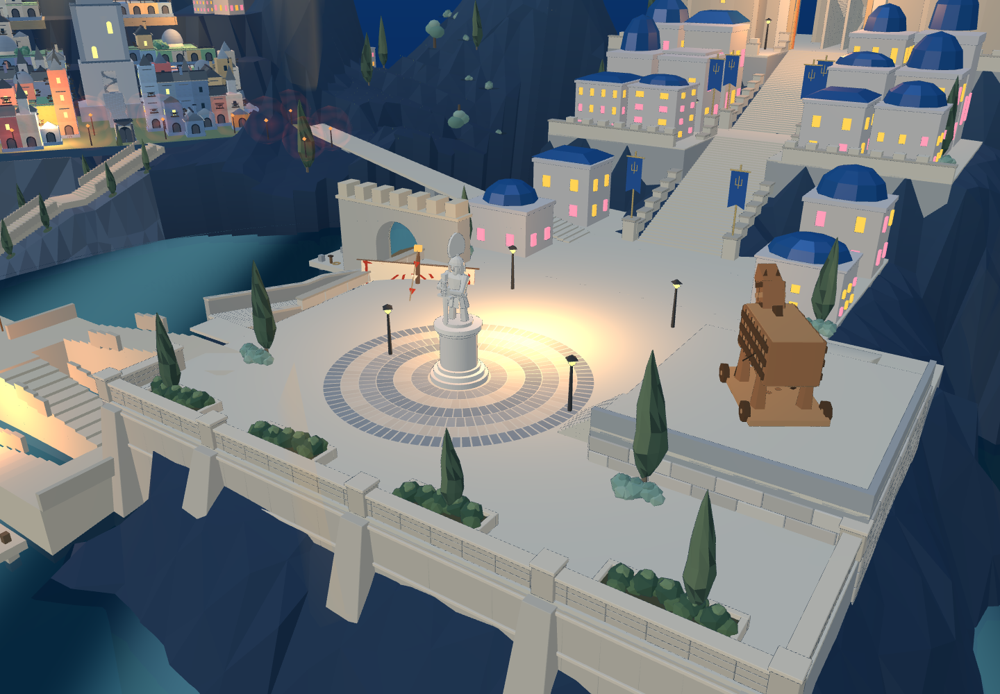
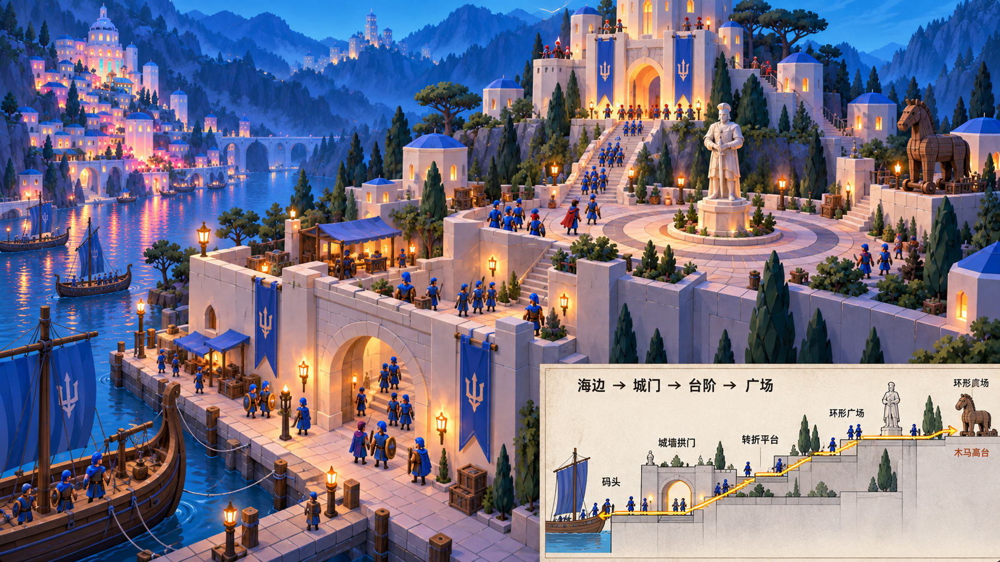
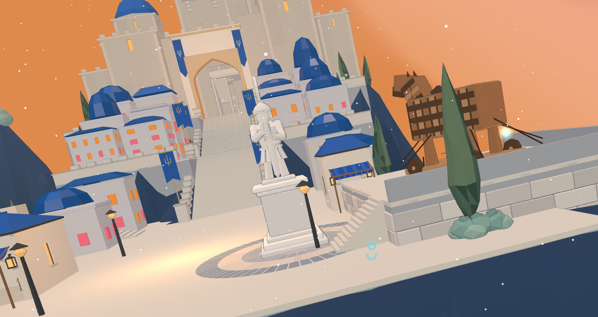
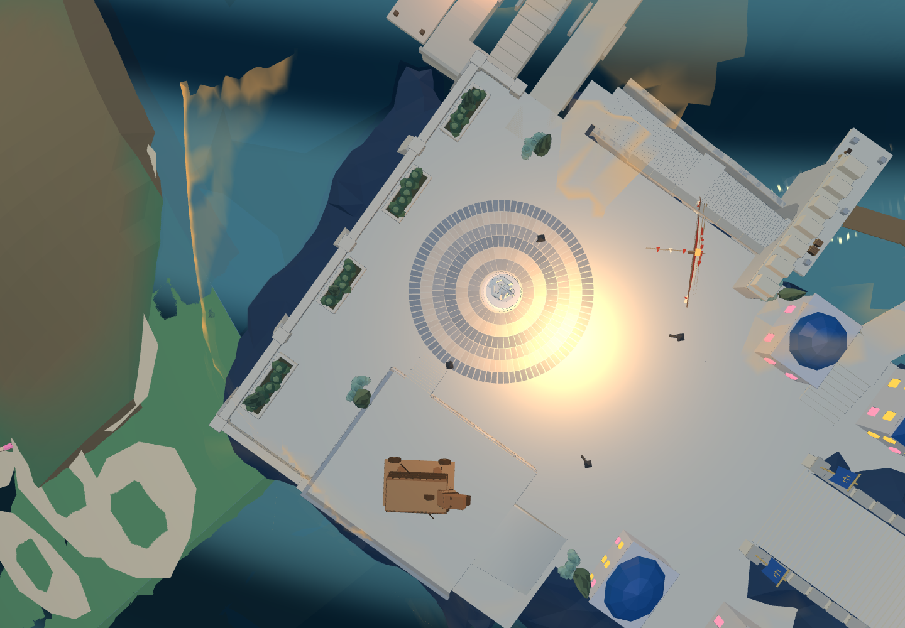
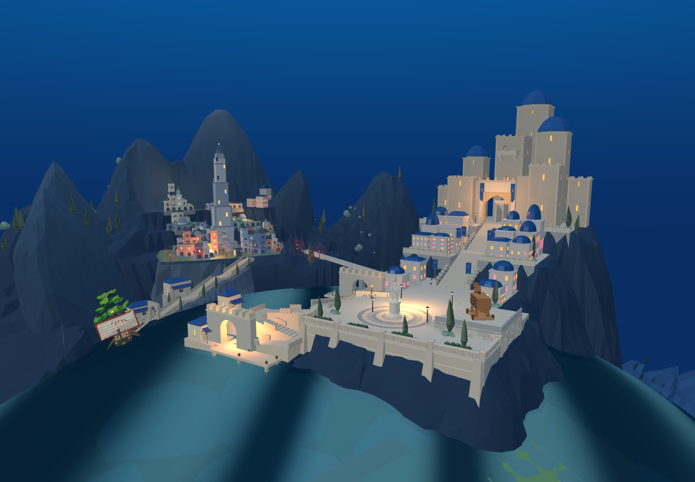

广场扩大，建筑下移到港口平台
当前改动已进入 8931 原游戏，并同步同一 Godot 工程。下图是实际游戏渲染；原图作为空间参照，不代表当前模型已完全复刻。
广场由 31.15 × 24 米扩为 36.15 × 29 米；雕像环砖从 3 圈增至 6 圈，外半径 7.4 米。雕像移至作者坐标 (59, 4, 76)，原木马及剧情位置保留。两处广场商铺移到下方水门旁与折返平台旁。

调整后的 8931 原游戏近景：六圈环砖、开放广场和右侧木马台。
用户指定的地势目标图
用户本轮提供的修改前实景（机位不同，不作像素差值）
当前游戏俯视：检查环砖与平台占地。
当前整体：商铺位于较低的港口层。 同一 Godot 工程实景，已同步几何。
同一 Godot 工程实景，已同步几何。已验证：广场 1,406 个落脚采样无缺失，Web 上城相关 3,255 采样通过；Godot 原短剑兵前港到广场 202 段通过。木马位置误差为 0。网页检查 · Godot 通路检查
仍待推进：平台外墙与岩体的完整衔接、广场边缘种植和防护、下层商铺入门动作、主堡与山体的目标图比例、完整战斗。本批是空间布局修正，没有重新制作原雕像或木马模型。